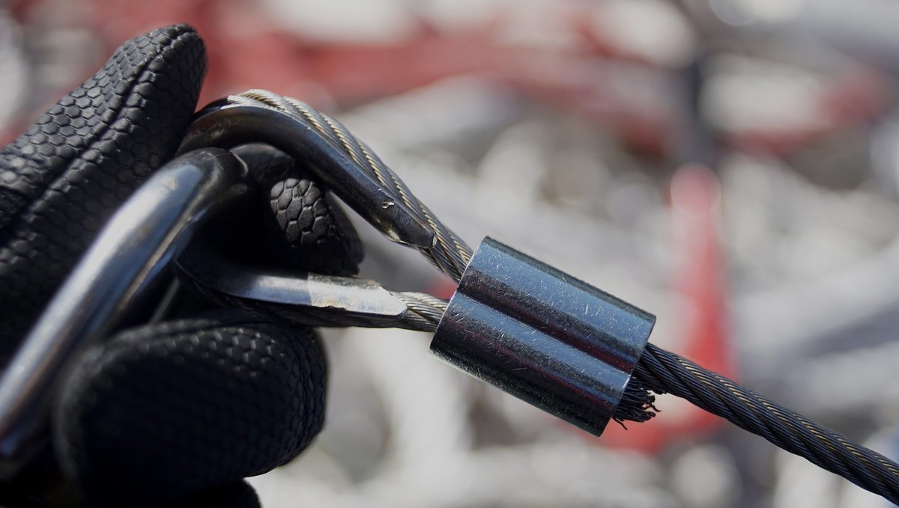
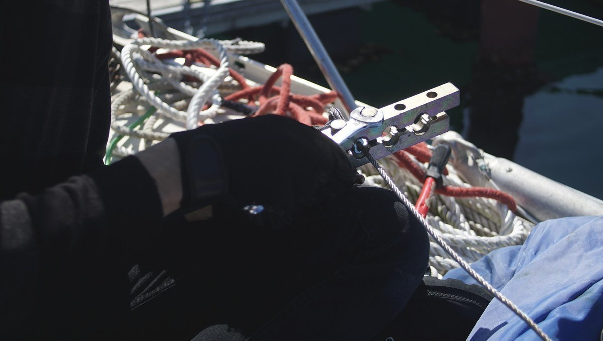
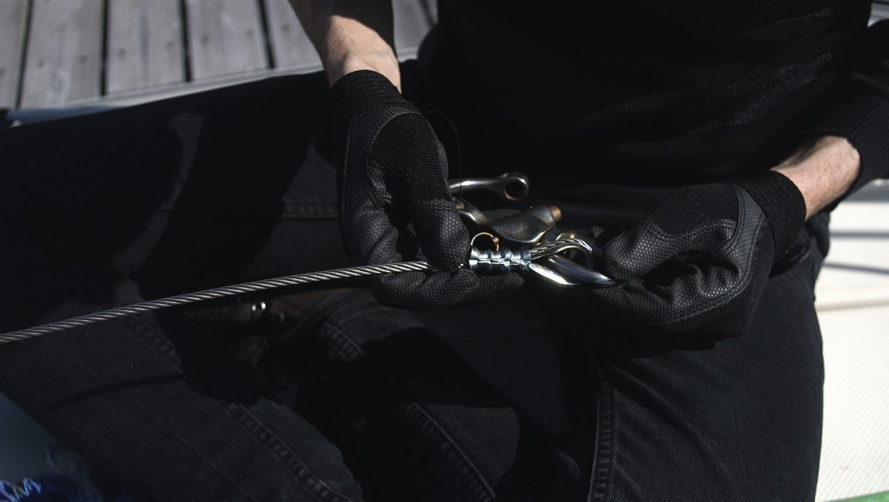

metal halyard swaging
20.05.13
Mie, Japan
Inspecting our running rigging is part of our yearly maintenance schedule. We looked at our wire to rope jib halyard and found that the end was very damaged. We could cut out the bad part of the wire and still have enough length to spare.
We thought of replacing it with a rope halyard, but realized that this would mean replacing the sheave at the top of the mast, so we quickly abandoned that idea.
We had to re-swage the end of the wire so we could keep using it to hoist the jib up and down. Swaging a small wire isn't hard, but having the right tool helps.
We cut the bad piece of wire off, borrowed a swage tool from Mr. Oka (marina harbourmaster) and re-did the end, using all new parts.
Swaging a new ferrule on was easy enough. We found a ferrule that matched the size of our wire, inserted the end of the wire through one of the holes, and then doubled it back to create a loop. We sized the loop to the thimble we had, leaving enough room for the jib shackle to pass through. Depending on your jib attachment, you may have to insert the shackle BEFORE passing the wire through the second ferrule hole (we had to do that for ours).
It is a good idea to have the cut end of the wire stick out of the second hole, at least two times the width of your cable. The idea is what when you start adding crimps to the ferrule, it will expand. This is a step to make sure you have enough length. We should have done this, but only learned later that this was the better way to do it. In the spirit of passing on worthwhile information, we wrote it here :).
When making crimps, orient your wire sideways, so the loop is on its side. The crimps ought to be pressing the two wires together.
The number of crimps depends on the size of your ferrule, we made 3, leaving space between each one. The number of crimps affects the order. With 3 crimps, we had to squeeze the middle first, then the end towards the loop, and then the opposite end. The order is different with 4, or 5 crimps.
2 swages: [ 1 | 2 ] 3 swages: [ 2 | 1 | 3 ] 4 swages: [ 2 | 1 | 3 | 4 ] 5 swages: [ 2 | 1 | 3 | 4 | 5 ]
There is such a thing as a swage gauge to check if you've crimped the ferrule properly, we did not use it because we didn't have access to one.
Easy peasy lemon squeezy.
